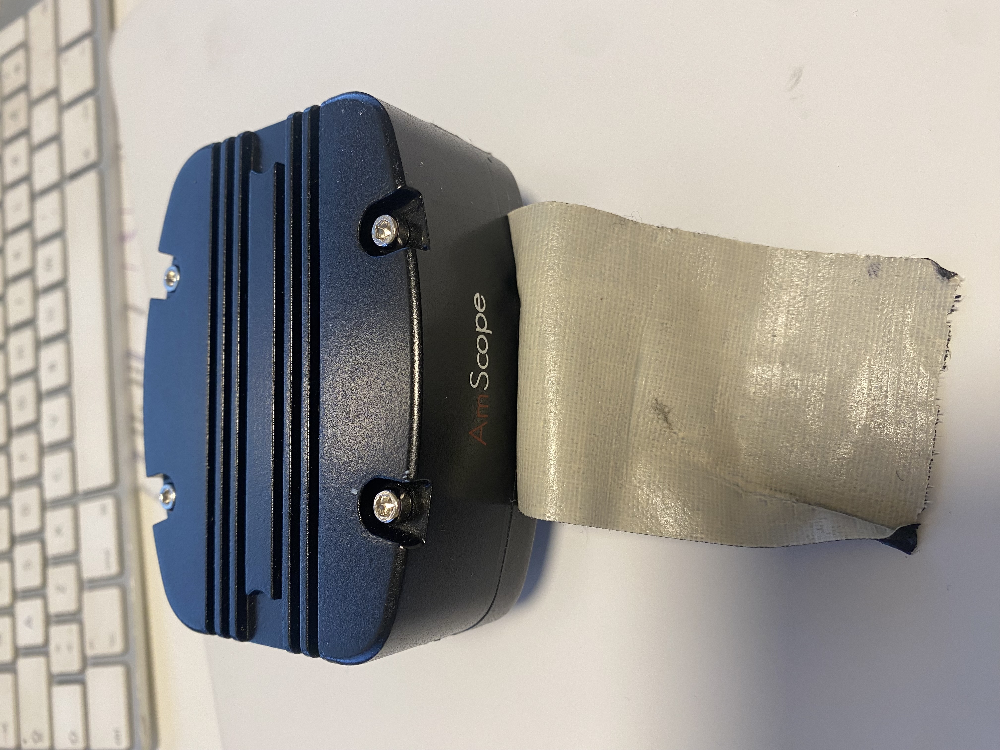
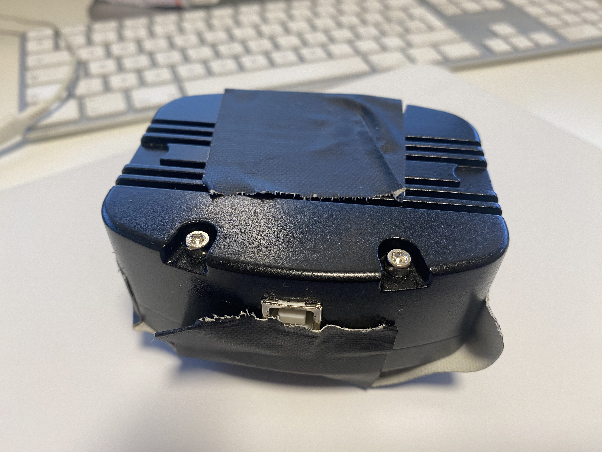

Owner photographs
Exterior views of the unmarked AmScope microscope camera used by this investigation. Select an image to open the full-resolution original.




Exterior views of the unmarked AmScope microscope camera used by this investigation. Select an image to open the full-resolution original.

